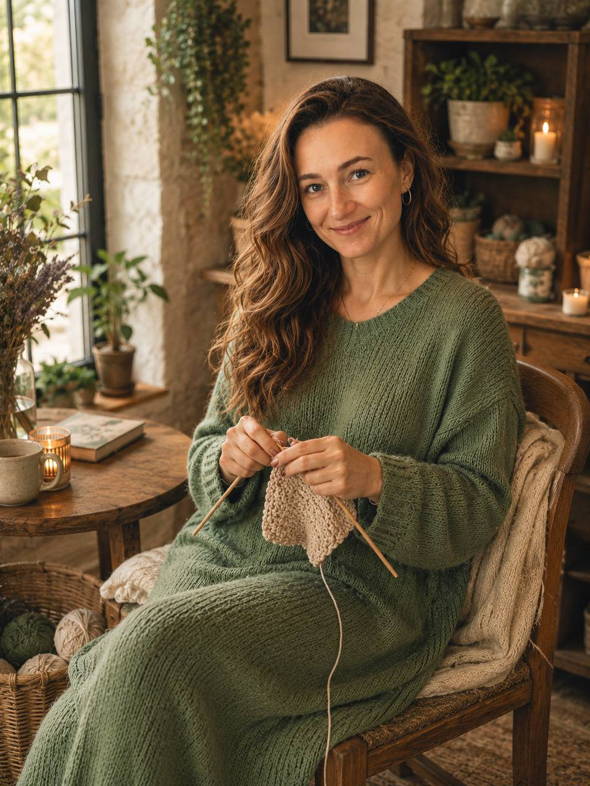

Я верю, что уют складывается из мелочей, и вязаные вещи в интерьере — это современно, стильно и экологично. В моих руках простая нить превращается в архитектурные кашпо и фактурные аксессуары. В своей мастерской я объединяю абсолютно разные по характеру материалы:
🧶 Воздушный хлопок — для нежности, легкости и свежести в спальнях и детских комнатах.
🌾 Фактурный джут — для любителей эко-стиля, брутальных форм и прочного, долговечного декора.
В каждой моей работе — магия натуральной нити, ровные петельки и внимание к деталям. От лаконичных кашпо и стильных авосек до уютных ковриков — я создаю вещи, которые делают Ваш интерьер особенным. Давайте наполнять Ваш дом красотой вместе!
Я создаю текстильный декор, который меняет настроение дома. В моих руках простая нить превращается в архитектурные кашпо и фактурные аксессуары. Каждая петелька — это ручная работа, созданная для того, чтобы интерьер стал теплее, мягче и по-настоящему Вашим.
От лаконичных кашпо до стильных авосек — каждая петелька связана с любовью и вниманием к деталям. Работаю с мягким хлопком для ваших спален и детских, и с прочным джутом для функционального декора. Заходите, выбирайте свой идеальный аксессуар или давайте придумаем что-то уникальное под ваш интерьер!